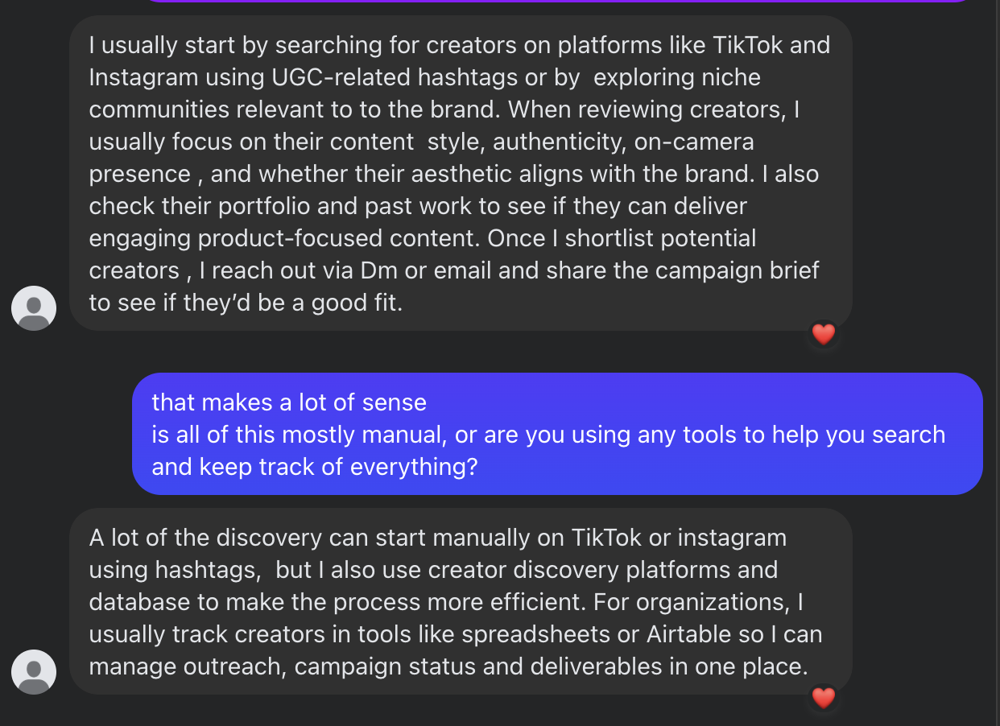
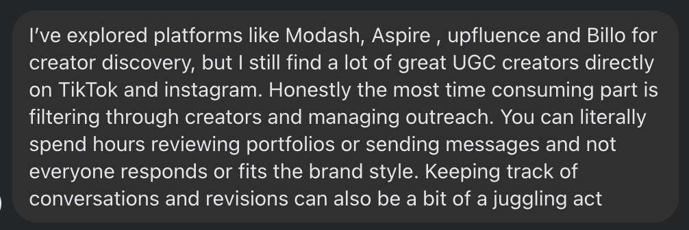
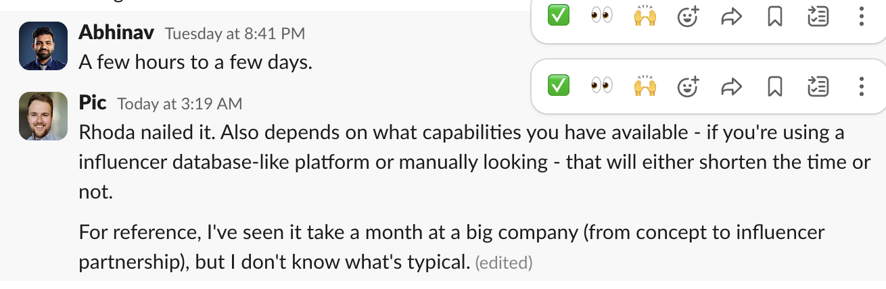
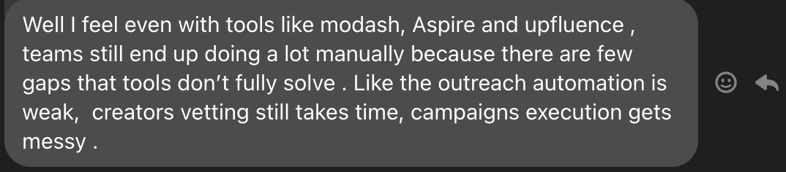
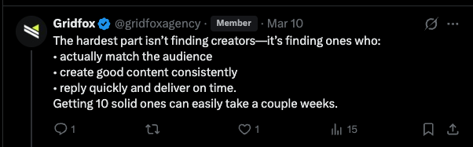

Vision 2026 — Neel Bhatt, March 2026
Creator ops,
automated.
An honest account of what we're building, why it matters, and where it goes.
An honest account of what we're building, why it matters, and where it goes.
You need 100 creators to get 20 good videos. To get 100 creators, you need to send about 2,000 DMs. Then vet them, follow up, send briefs, chase content, review it, pay them, track whether any of it worked. Then do it again next month.
The entire B2B lead gen industry was built around email addresses and job titles. It doesn't work here. All the Clay workflows, Outreach sequences, intent data platforms — none of it was built for a creator whose professional presence is an Instagram bio and a DM inbox.





The creator economy is enormous and still growing. The tooling for mid-market brands is a decade behind.
From automated ops tool to the infrastructure layer of the creator economy.
Pynch is an agent-powered creator operations tool. It automates the full creator pipeline — sourcing, outreach, onboarding, briefing, content collection, payment, performance tracking.
Genuinely excellent at this before expanding to anything else. If we can get a brand to 100 creators producing reliably at $50/video — consistently, without drama — that's a product worth paying for.
Employers post jobs → builds candidate pool → candidate pool becomes the product. Brands run creator ops through Pynch → collectively build the creator network → network makes Pynch more valuable to every other brand.
People actively searching for things like these aren't casually browsing. They're trying to figure out how to do this with spreadsheets at 11pm on a Tuesday.
Platforms are being flooded with AI-generated videos. AI avatars. Synthetic creators. Audiences are already developing a radar for it — and they reject it.
Brands that figured out how to work with real humans at scale will have a meaningful advantage. Pynch's position: use AI to handle all the operational overhead so brands can afford to work with more real people.
This isn't a theoretical problem. Spartan runs DietFit. The creator pipeline for DietFit is genuinely painful — real hours, real people, real manual work.
Being the first customer who depends on your own product is the most useful thing a founding team can be. Bad ideas fail fast. Good ones prove themselves with real stakes.
Not fifty paying customers. Not a funding round. Not month-over-month growth charts. A small number of customers who would be angry if it went away. Who tell other people because it solved something real.
The goal isn't feature completeness. It's building something indispensable.
Real feedback loop. Real stakes. Building something indispensable.
Visit pynchhq.com → pynch · march 2026